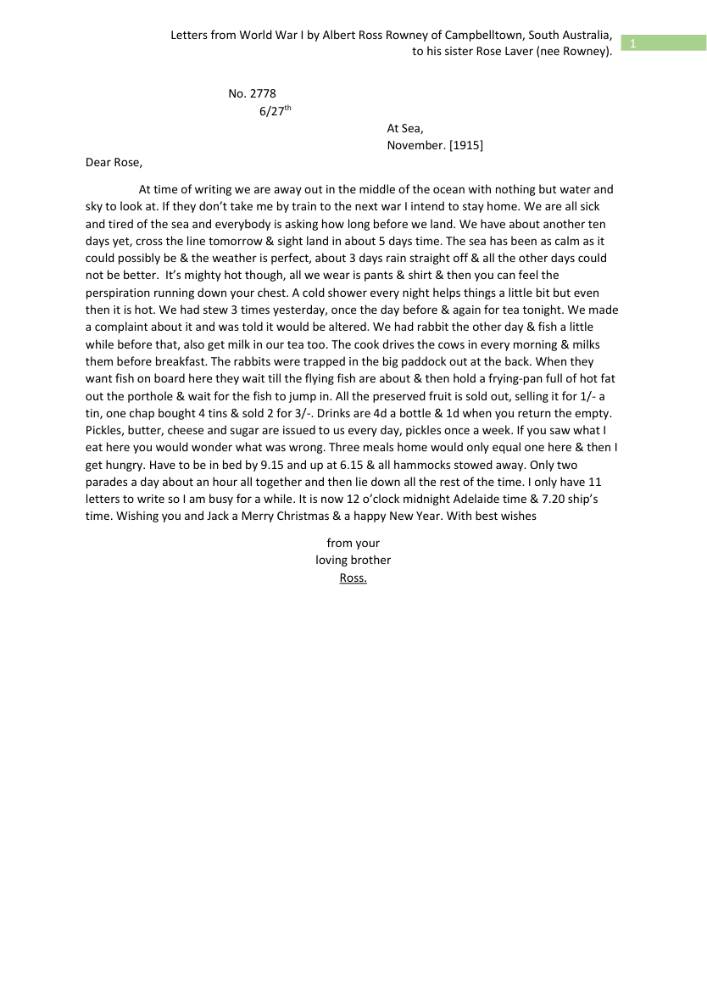

Before: the source page

After: saved Chronicle output
This excerpt comes from the saved Chronicle result for the first letter. The source is a typed transcription of a historical letter, rather than the handwritten original.
[Page 1]
No. 2778
6/27th
At Sea,
November. [1915]
Dear Rose,
At time of writing we are away out in the middle of the ocean with nothing but water and sky to look at. If they don't take me by train to the next war I intend to stay home. We are all sick and tired of the sea and everybody is asking how long before we land. We have about another ten days yet, cross the line tomorrow & sight land in about 5 days time. The sea has been as calm as it could possibly be & the weather is perfect, about 3 days rain straight off & all the other days could not be better. It's mighty hot though, all we wear is pants & shirt & then you can feel the perspiration running down your chest. A cold shower every night helps things a little bit but even then it is hot. We had stew 3 times yesterday, once the day before & again for tea tonight. We made a complaint about it and was told it would be altered. We had rabbit the other day & fish a little while before that, also get milk in our tea too. The cook drives the cows in every morning & milks them before breakfast. The rabbits were trapped in the big paddock out at the back. When they want fish on board here they wait till the flying fish are about & then hold a frying-pan full of hot fat out the porthole & wait for the fish to jump in. All the preserved fruit is sold out, selling it for 1/- [1 shilling] a tin, one chap bought 4 tins & sold 2 for 3/- [3 shillings]. Drinks are 4d [4 pence] a bottle & 1d [1 penny] when you return the empty. Pickles, butter, cheese and sugar are issued to us every day, pickles once a week. If you saw what I eat here you would wonder what was wrong. Three meals home would only equal one here & then I get hungry. Have to be in bed by 9.15 and up at 6.15 & all hammocks stowed away. Only two parades a day about an hour all together and then lie down all the rest of the time. I only have 11 letters to write so I am busy for a while. It is now 12 o'clock midnight Adelaide time & 7.20 ship's time. Wishing you and Jack a Merry Christmas & a happy New Year. With best wishes
from your
loving brother
Ross.
What to check
The saved result keeps the old amounts and adds reading aids such as “1 shilling”, “4 pence” and “1 penny”. Compare each expansion with the source. This example demonstrates reading aids and document structure; it is not evidence of handwriting recognition or a new full-document accuracy test.